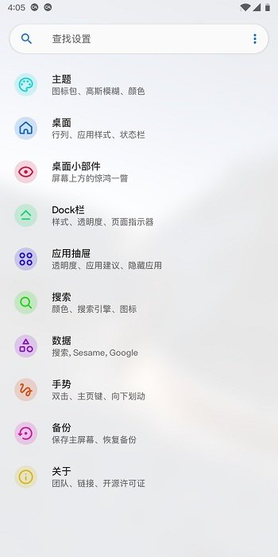

换了桌面启动器之后，我花了三天才把手机"救活"
从原生启动器切换到第三方桌面，本以为是换个皮的事，结果遭遇了手势失效、小部件罢工、桌面随机重载的连环故障。记录一下踩坑和排查的完整经历。
周末的决定
那个周六下午我坐在沙发上刷手机，忽然觉得三星原生的 One UI 桌面又臃肿又没个性——图标间距大得浪费空间，抽屉翻起来滑溜溜的，想把常用的十几个 App 整齐摆一排都难。
之前在数码群里听过好几个朋友安利 Lawnchair，说是轻量、可定制、支持双击息屏和手势导航，开源还免费。上Lawnchair官网看了一眼，发现它是现在 Android 社区口碑最好的第三方启动器之一。二话不说，下载、安装、设为默认桌面，一气呵成。

当晚的崩溃
一切看起来都挺好。我把网格从默认的 5×5 调到 6×6，主屏幕一排能多放一个图标，抽屉也调得更密了些。双击息屏的手势设置好之后试了两下，啪一下就灭屏了，爽。
然后我去洗澡。
洗完出来拿起手机，按 Home 键回到桌面——整个桌面在重新加载。图标一个一个往外蹦，天气小部件从昨天的数据慢慢刷过来。我愣了一下，以为是刚装完的临时性卡顿，没当回事。
结果关灯睡觉前又发生了一次。然后第二天早上起来，双击息屏完全没反应了——点桌面两下，屏幕亮着就是不灭。天气小部件还卡在了昨天下午的温度上。我点开日历想看看今天的日程，日历小部件还停留在三天前。
排查的第一天
我开始在网上搜"Lawnchair 手势失效""桌面重载"，翻了好几个帖子才在一篇文档里找到线索——是电池优化把它杀掉了。
原来 Android 的后台管理对启动器特别不友好。普通 App（比如微信、抖音）被后台限制了无所谓，但启动器需要持续运行无障碍服务来检测手势、保持小部件刷新、维护桌面状态。系统为了省电，过几个小时就会把 Lawnchair 的后台进程和无障碍服务一起干掉。
干掉之后的症状跟我遇到的一模一样：双击息屏失效、桌面偶尔重载、小部件停止刷新、无障碍服务被自动关闭。
我按文档里的步骤去三星 One UI 里找电池设置：设置 → 电池与设备维护 → 电池 → 后台使用限制。关掉了"让未使用的应用进入休眠"，又进到休眠应用列表里把 Lawnchair 移除，最后在应用详情里把电池使用情况改成"允许后台活动"。
做完这些重启了一次手机，双击息屏回来了。

排查的第二天
问题解决了？还没完。
天气小部件过了半天又不刷新了。这次我注意到一个细节：不是 Lawnchair 被杀，是天气 App 本身被杀了。文档里提到每个小部件都有一个"宿主应用"——天气小部件对应天气 App，日历小部件对应日历 App，这些宿主应用也得一起排除电池优化。
我把天气和日历两个 App 的电池限制也关了。然后发现我之前还漏了通知访问权限——系统设置里通知访问那一栏，Lawnchair 的开关被重置成了关闭状态，难怪音乐小部件也不更新。
这一天学到的：小部件的问题永远要先查两层——启动器本身有没有被优化，宿主应用有没有被优化。两层都没问题再去看权限。
排查的第三天
本来以为到此为止了，结果在折腾网格的时候又出了新状况。
我主屏幕调 5×5，抽屉调 6×6，文件夹调 4×4——翻了下Lawnchair文档，这是比较平衡的搭配。改完之后发现图标位置自动重新对齐了，几个文件夹被挤到了第二页。我花了半个小时把它们重新归位，然后决定也给抽屉和文件夹的宿主应用做一次电池优化排除。
顺便还翻了一下安装相关的文档，确认了一个容易踩的坑：GitHub 版、Play Store 版、Nightly 版的签名都不一样，不能互相覆盖安装。我之前差点用 Play Store 版覆盖掉 GitHub 版，还好先看了一眼。
现在的状态
三天折腾下来，手机终于稳定了。双击息屏每天都能用，小部件天气正常刷、日历实时更新、音乐切歌也跟着变。桌面再也不随机重载了。
回想一下，其实这些步骤文档里都写得清清楚楚。但真遇到问题的时候，人总想着"先搜一下看看有没有现成答案"，反而忽略了最直接的排查路径——看官方文档的问题排查章节。
Lawnchair 这类第三方启动器，能给 Android 桌面带来的可定制化程度远超原生启动器。但自由度是有代价的：系统层的电池管理、后台策略、签名机制，每一个都可能成为拦路虎。好消息是这些问题都有明确的解法，只是需要多花一点点时间。
这套排查方法我整理好了，在 GitHub、Gitee 和 GitCode 三个仓库里都能找到完整的文档——毕竟开源项目嘛，社区维护的资料多一份就多一份保障，国内网络环境下也总能找到一个能顺畅打开的源。